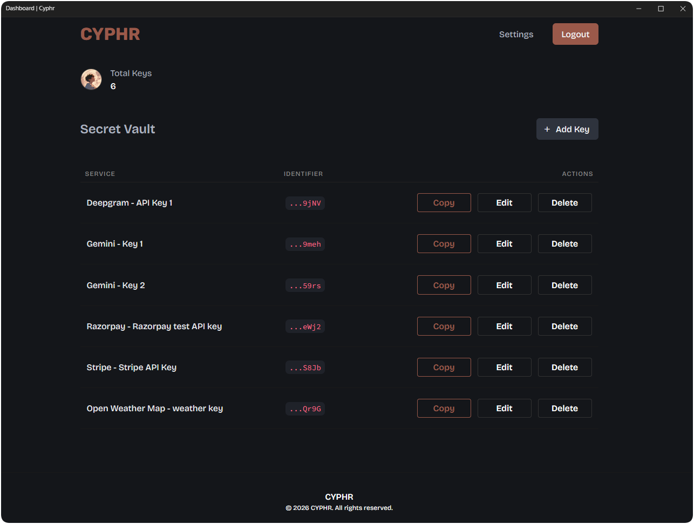

Cyphr.
Cyphr stores application secrets and API keys behind a small API on Cloudflare Workers, so they never have to live in plaintext in a config file or a repo.

How it works
- AES-256-GCM encryption on every secret before it reaches PostgreSQL.
- 423ms down to 96ms response latency, using a Cloudflare KV and V8 isolate memory.
- 56% higher throughput, measured with Grafana k6 load tests.
- Supabase Auth for sign-in, so there's no custom login code to maintain.
- JavaScript
- Hono
- PostgreSQL
- Cloudflare Workers
- Cloudflare KV
- Supabase Auth
- Grafana k6